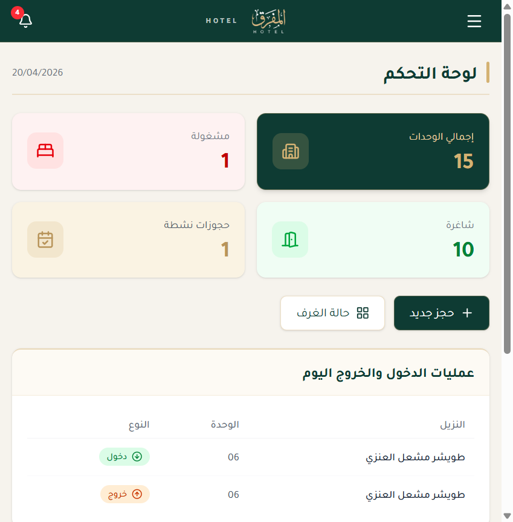
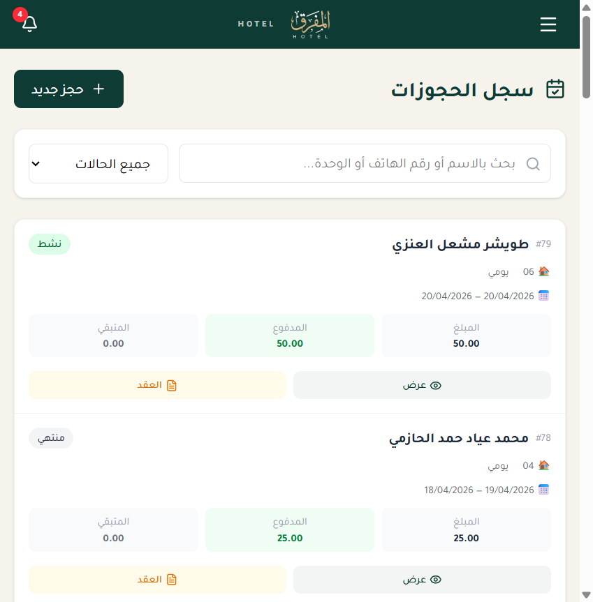
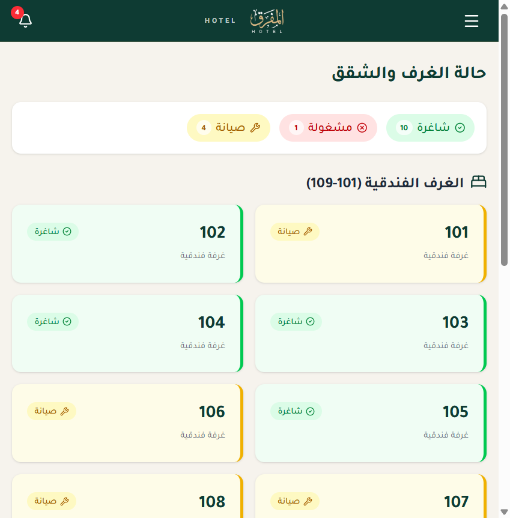
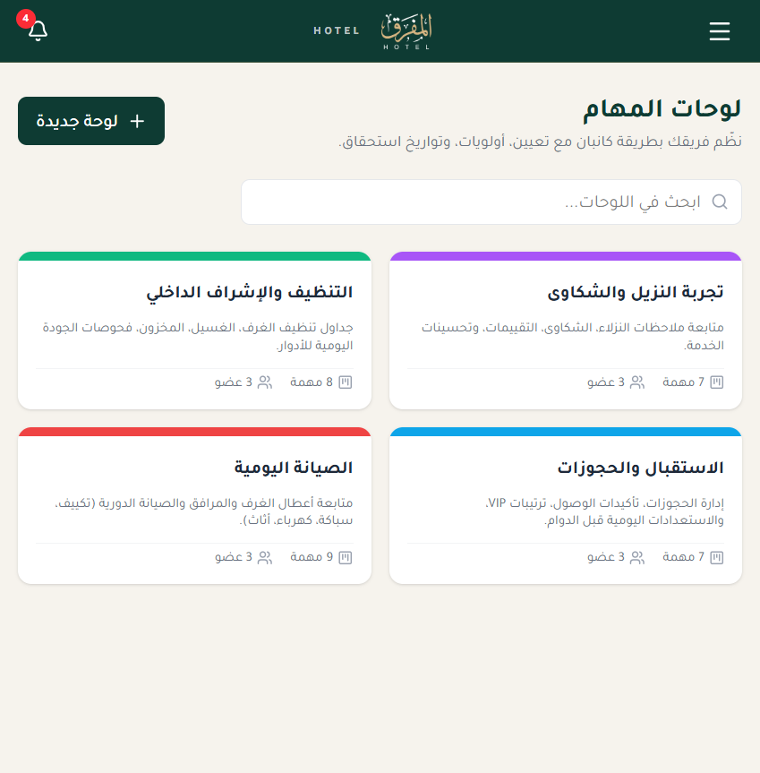
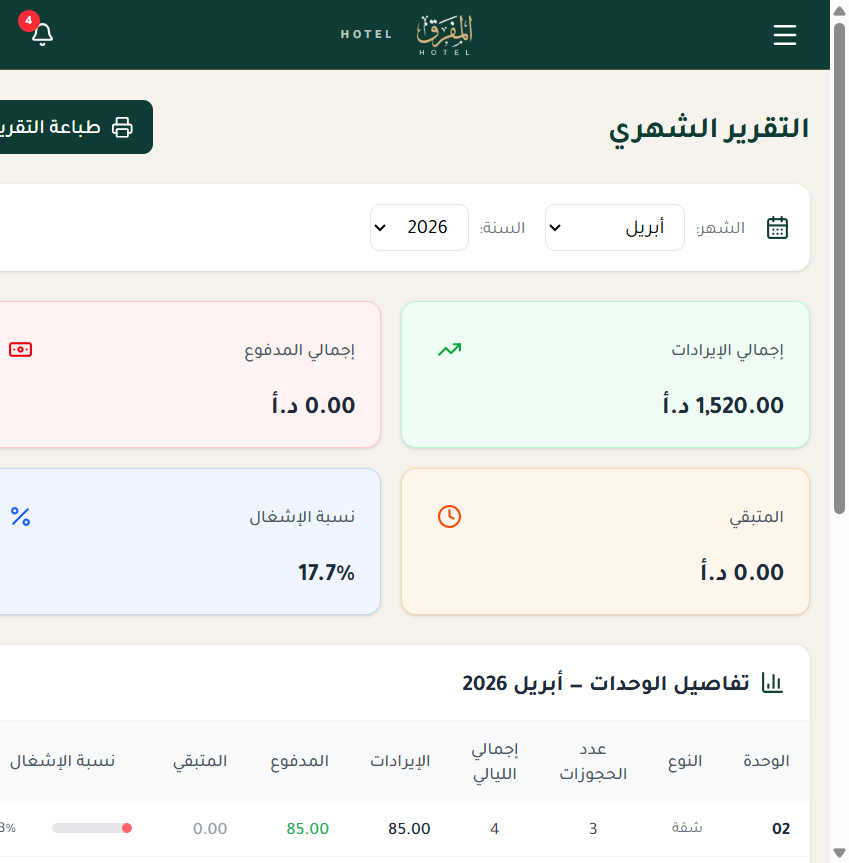
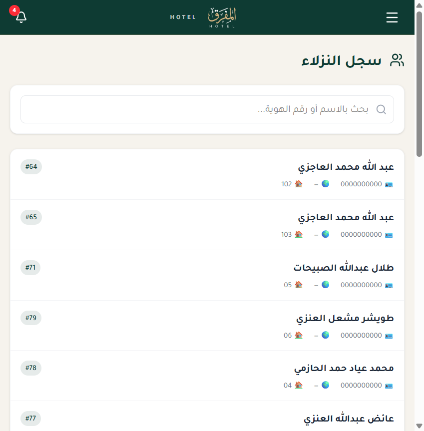

https://www.airbnb.com/partner) states:
siteminder.com/channel-manager/airbnb-hotels).
We operate an in-house Property Management System (PMS) built specifically
for our hotel group: 3 properties — property 14364167 (Al-Mafraq
Hotel) already live on Booking.com, and two more being onboarded. We want the
same property footprint to go live on Airbnb with the same guarantees:
single source of truth in our PMS, real-time two-way sync, no double-bookings,
and one operational dashboard for the whole channel mix.
Our PMS will integrate with SiteMinder's public pmsXchange and SiteMinder Exchange (SMX) APIs. SiteMinder then fans our inventory out to Airbnb, Booking.com, Expedia, Agoda, and 420+ other channels from one integration on our side.
The system is already in production at https://hotel.aqssat.co and is used daily by our staff.
| Layer | Technology |
|---|---|
| Runtime | Next.js 16 (App Router) on Node.js |
| Language | TypeScript (strict mode) |
| Database | PostgreSQL via Prisma ORM 6 |
| Auth | NextAuth.js (JWT, bcrypt, 2FA-ready) |
| Realtime | Socket.IO + Postgres LISTEN/NOTIFY triggers |
| Permissions | Fine-grained RBAC registry with requirePermission() |
| Deployment | Single-region VPS, Nginx reverse proxy, PM2 processes |
| Credential storage | AES-256-GCM at rest (HKDF-derived key) |
All external-integration credentials are encrypted with AES-256-GCM via an
HKDF-derived key from BOOKING_ENC_KEY
(see src/lib/booking/encryption.ts). The same vault will hold
SiteMinder API keys and per-channel mapping tokens.
| PMS concept (Prisma) | SiteMinder object | Airbnb concept |
|---|---|---|
UnitType | RoomType | Listing |
UnitTypeBed | Bed configuration | Bed configuration |
Unit | Inventory count per type | Managed by SM |
Rate / UnitTypePrice | RatePlan | Nightly price / min stay |
Reservation | Reservation | Reservation |
Guest | Guest profile | Guest |
Amenity / Photo | Content attributes | Amenities / photos |
The in-flight UnitType redesign (see
docs/plans/unit-types-redesign.md) normalises exactly the fields
SiteMinder expects: maxOccupancy, bedroomCount,
livingRoomCount, bathroomCount, per-type bed list,
amenity list, photo gallery, and seasonal Rate records.
Listing strategy: one Airbnb listing per UnitType, with
inventory count equal to the number of physical units of that type. This
matches Airbnb's "Hotels / Boutique Hotel" model and avoids the operational
pain of 20+ identical per-room listings.
OTA_HotelDescriptiveContentNotif, OTA_HotelRoomList).OTA_HotelAvailNotif, OTA_HotelRateAmountNotif,
OTA_HotelInvCountNotif).Every stream will be idempotent (SiteMinder message IDs), retried with exponential backoff + dead-letter queue, and carry structured logs with correlation IDs across PMS ↔ SiteMinder ↔ OTA. Channel-level feature flags let us pause a single OTA (e.g. Airbnb) without affecting the others.
| Module | Status | Notes |
|---|---|---|
| Reservations | Live | CRUD, check-in/out, deposits, source field already supports AIRBNB |
| Unit types · beds · amenities · photos | Live | Schema described in §4 |
| Seasons & rates | Live | Seasonal per-unit-type pricing, feeds ARI directly |
| Booking integration skeleton | Live | credentials/ · inbox/ · jobs/ · property-map/ |
| Monthly reports | Live | Revenue, occupancy, ADR, RevPAR, channel mix |
| Tasks (Kanban) | Live | Ops board for mapping / parity exceptions |
| Notifications | Live | Socket.IO + Postgres NOTIFY triggers |
| Permissions | Live | 40+ capabilities, enforced per API route |
Only channel-specific adapters are missing. We will add
src/lib/channel-managers/siteminder/, a new
ChannelProvider = SITEMINDER value, and a
src/app/settings/channel-managers/ UI for credentials + room-type
mapping + push history — registered via the permissions registry.
src/lib/rateLimit.ts).| Phase | Scope | ETA |
|---|---|---|
| 0 | Open SiteMinder account; onboard Al-Mafraq as a property | 2 weeks |
| 1 | SiteMinder developer credentials (sandbox + production) | 1 week |
| 2 | pmsXchange client: Content + ARI · map UnitTypes → RoomTypes | 3 weeks |
| 3 | SMX client: reservations (REST/JSON) + webhooks | 2 weeks |
| 4 | End-to-end sandbox test: push ARI → verify on Airbnb staging | 1 week |
| 5 | Certification + go-live for property 14364167 | 1 week |
| 6 | Onboard properties 2 & 3 under the same SM account | 2 weeks |
| 7 | Monitoring dashboards + on-call rotation + parity alerts | 1 week |
Total: ~13 weeks to full production across 3 properties on Airbnb + Booking + Expedia.
osamaqazan89@gmail.com) from guest → host.booking/credentials under provider SITEMINDER.| Option | Verdict |
|---|---|
| Apply directly to Airbnb for API access | Closed to new applicants |
| Hostaway (vacation-rental oriented) | Less ideal for hotel rooms |
| Cloudbeds (PMS + CM in one) | Would replace our own PMS |
| STAAH (Middle-East focus) | Viable backup; similar plan |
| SiteMinder (chosen) | Strongest API + OTA reach |
| Manage Airbnb manually (no API) | Not scalable beyond one unit type |
Happy to jump on a call with SiteMinder's partner manager or share read-only demo access to our PMS on request.
The following screenshots are captured live from https://hotel.aqssat.co
(Arabic RTL UI). They illustrate the modules that will consume the SiteMinder
APIs and surface Airbnb-originated reservations.
OTA_HotelAvailNotif.




customerId.